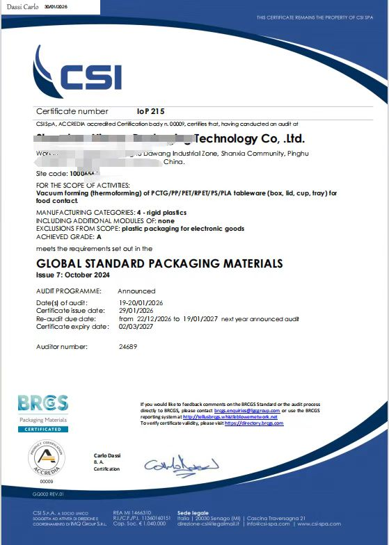
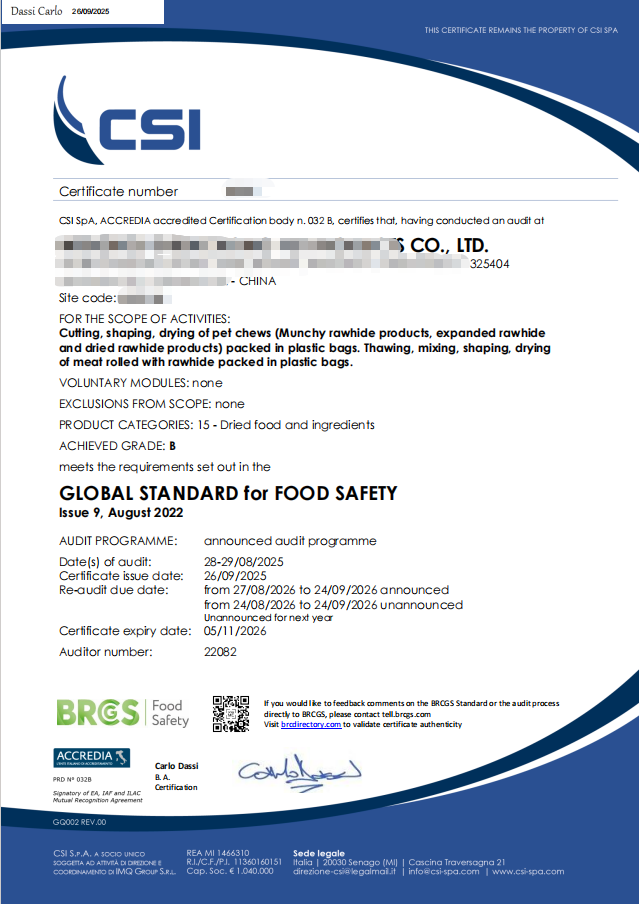
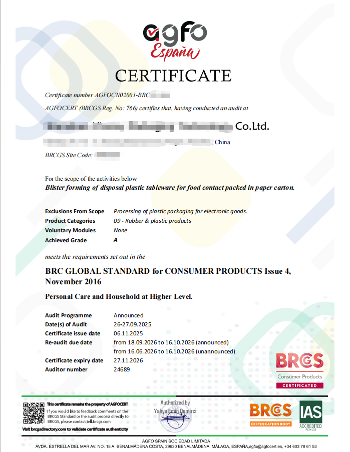
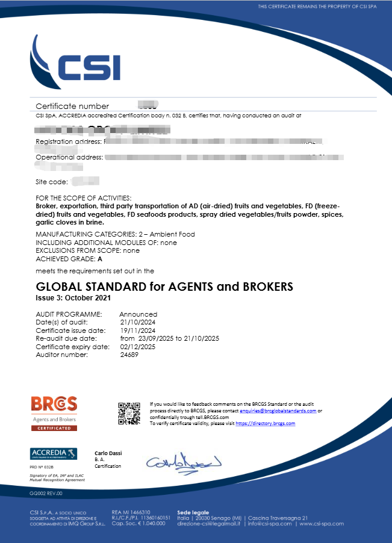
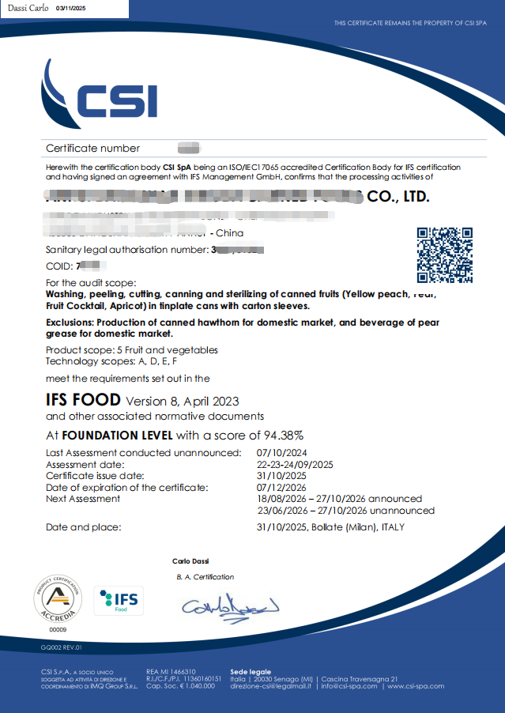
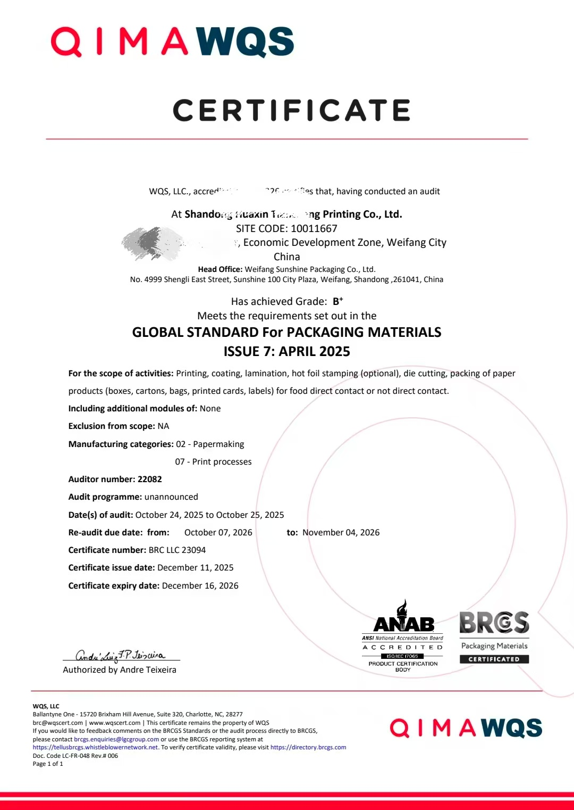
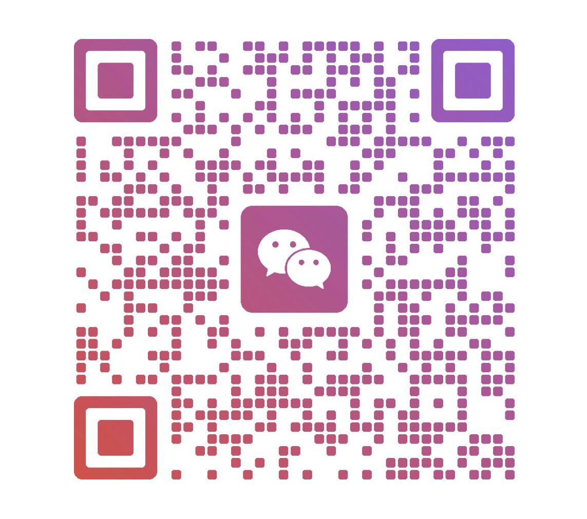

适用于出口食品生产、初级加工企业。覆盖 HARA 危害分析、前提方案、追溯与召回、现场硬件符合性。
适用于塑料、纸、金属等各类包装及印刷企业。覆盖产品安全与质量管理体系、现场标准、产品与过程控制。
适用于 General Merchandise 及 Personal Care & Household 品类，含 CP 全条款体系搭建。
适用于贸易商、进口商、代理商等非生产性企业，聚焦产品安全管控与供应商管理。
适用于欧洲零售商与品牌商供应链食品企业，覆盖 HACCP 与 IFS 特有要求。
适用于包装材料生产企业，覆盖食品包装安全与质量管理要求。
适用于食品制造、包装、仓储物流企业，基于 ISO 22000 的食品安全管理体系认证。
MSC（Marine Stewardship Council，海洋管理委员会）可持续渔业及产销监管链（CoC）认证，适用于海产品捕捞、加工与贸易企业；ASC（水产养殖管理委员会）适用于养殖企业。
BRCGS、IFS、FSSC 标准条款精讲（管理层/内审员/全员）；危害分析（HARA）、供应商管理、可追溯等单项流程培训；迎审技巧与不符合项整改培训，可到厂或线上进行。
针对已获证企业：复审前差距分析、体系文件审查、内部审核支持、不符合项整改辅导。
对照标准条款逐项核查现场、文件与记录，形成差距清单。
明确必改项与优先序，确定硬件改造、文件体系与培训安排。
文件体系建立、现场整改指导、记录闭环与人员培训。
按正式审核流程模拟内审，提前暴露问题；审核期间提供技术支持。
企业由传统内销产线升级改造，面对海外客户供应链准入要求。现状诊断发现：车间人流与废弃物物流存在交叉污染隐患、CCP 监控记录缺少复核签字闭环。辅导完成洁净区隔离规划与追溯链条重建，正式审核通过，不符合项按期整改关闭。
上轮审核遗留不符合项整改不到位，复审风险高。逐条核对整改证据链，重新设计纠正预防措施的有效性验证方法，复审顺利通过。
涉及食品、包材、消费品等多类企业。出于客户保密考虑，仅展示脱敏后的技术要点。
以下为参与审核的认证项目证书示例（点击可放大查看）。

BRCGS Packaging Materials
BRCGS Food Safety
BRCGS Consumer Products
BRCGS Agents & Brokers
IFS Food
BRCGS Packaging (WQS)本页证书由以下 BRCGS 认可认证机构签发：
CSI S.p.A.——总部位于意大利伦巴第大区 Lissone 的认证机构，ACCREDIA 认可（认证编号 032B），EA/IAF/ILAC 多边互认签约，服务覆盖 BRCGS、IFS、GLOBALG.A.P. 等标准
AGFO Cert（AGFO Teknik Kontrol ve Belgelendirme Hizmetleri Ltd.，意译：AGFO 技术检验与认证服务有限公司）——2005 年成立于土耳其伊斯坦布尔（马尔特佩区）的认证机构，BRCGS 注册 No. 766，服务覆盖 BRCGS、IFS、FSSC 22000、GLOBALG.A.P.、ISO 等国际标准
WQS（World Quality Services）——总部位于美国北卡罗来纳州，深耕北美与拉美食品、包装、农产品认证领域，现属 QIMA 集团，签发 BRCGS 包装证书
取决于企业基础：体系完善的企业 1-2 个月可迎审；基础薄弱需整改的，通常 2-3 个月。首次沟通后会给出客观的时间预估，不做脱离实际的承诺。
按项目整体报价，视企业规模、标准类型与基础状况确定；也可按阶段（诊断、体系搭建、模拟审核）拆分。
咨询与认证完全分离：我们协助企业建立体系、准备迎审，认证审核由企业自主选择的有资质认证机构执行。我们不承诺、也不参与审核结果的判定。
出口食品、包装材料、消费品、贸易经纪企业；有海外大客户或电商平台准入要求、需要 BRCGS / IFS / FSSC 22000 证书的企业；已获证需要复审支持的企业。
微信联系获取对应行业的标准自查清单，可针对工厂现状做一次前期技术沟通。

长按/右键保存二维码后，打开微信「扫一扫」→ 右上角相册图标选择图片即可添加；或直接复制微信号 lthayu 搜索添加
{kind=link}